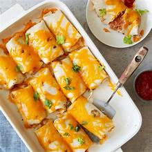
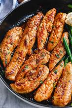

THE ODIN RECIPES

The baked rolls
ingredients:
steps:
- put the rolls on a clean table
- put the oil on it then add the chicken
- turn the oven on and put the rolls for 30min
- take it out of the oven and enjoy!
THE ODIN RECIPES

The fried chicken
ingredients:
steps:
- put the chicken in the tray
- put the oil on it then add the green onion
- turn the oven on and put the tray for 20min
- take it out of the oven and enjoy!